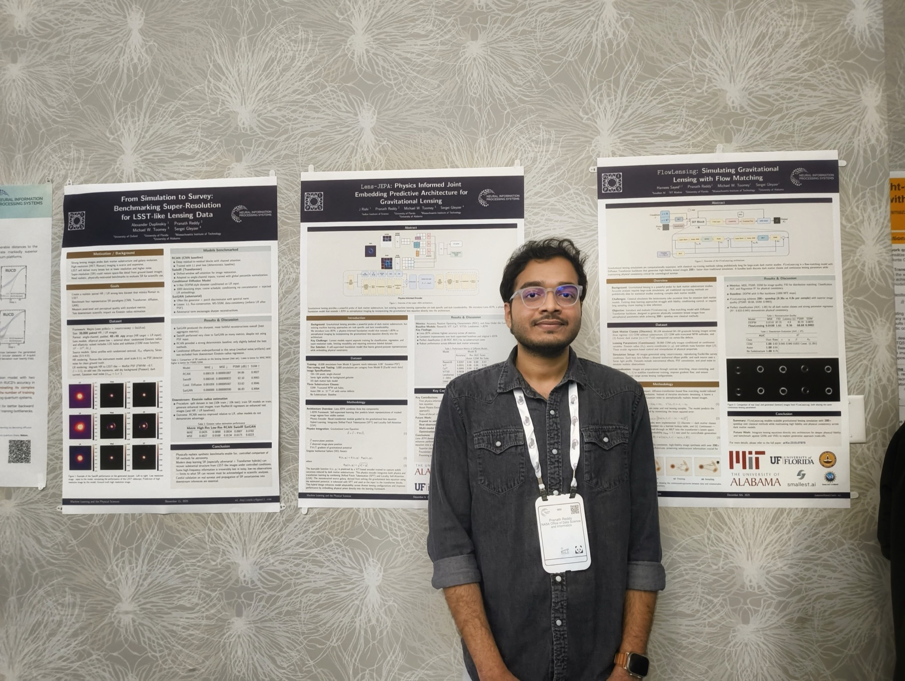
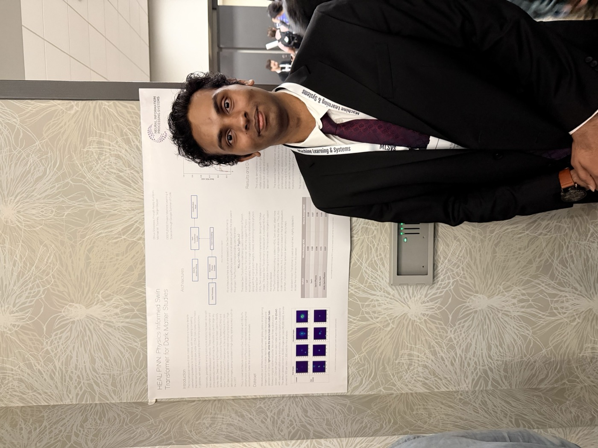
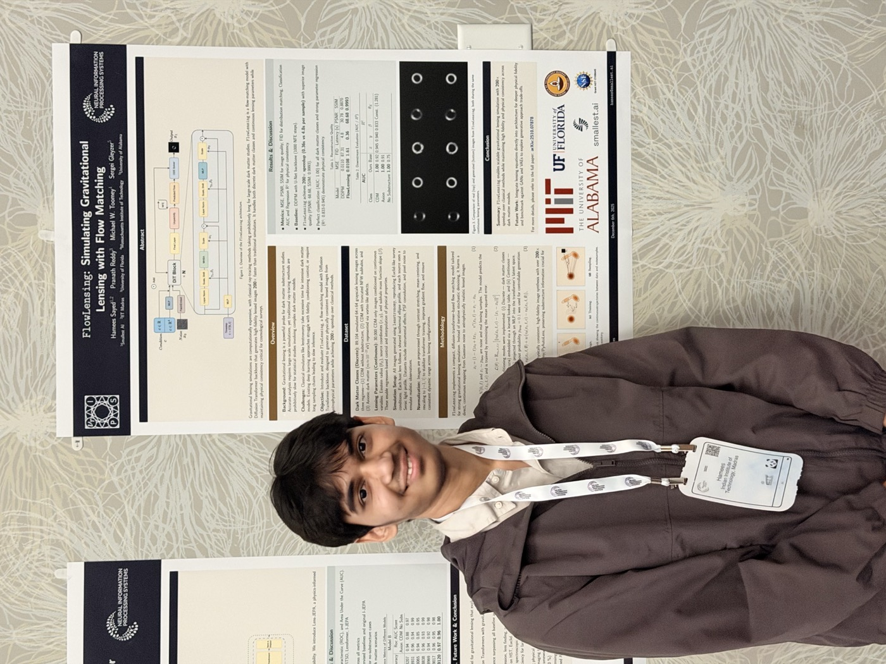
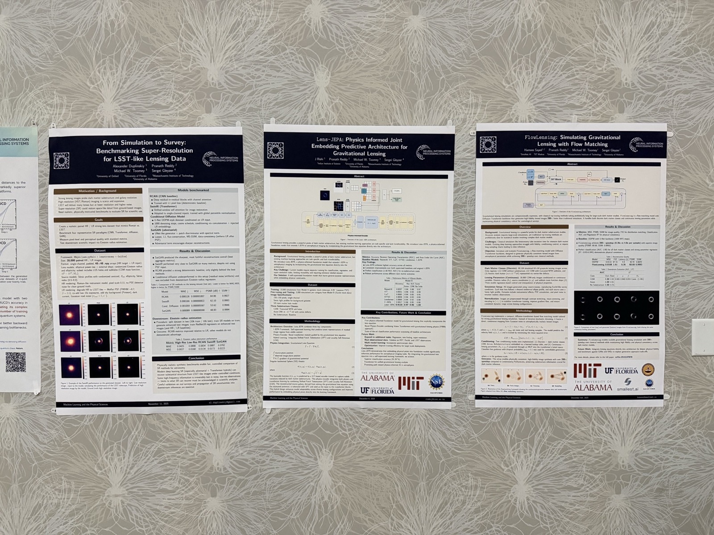

Conference
DeepLense at NeurIPS 2025.
Members of the group brought a cross-section of the research program to San Diego—from physics-informed models and foundation representations to fast simulation and survey-ready imaging.



